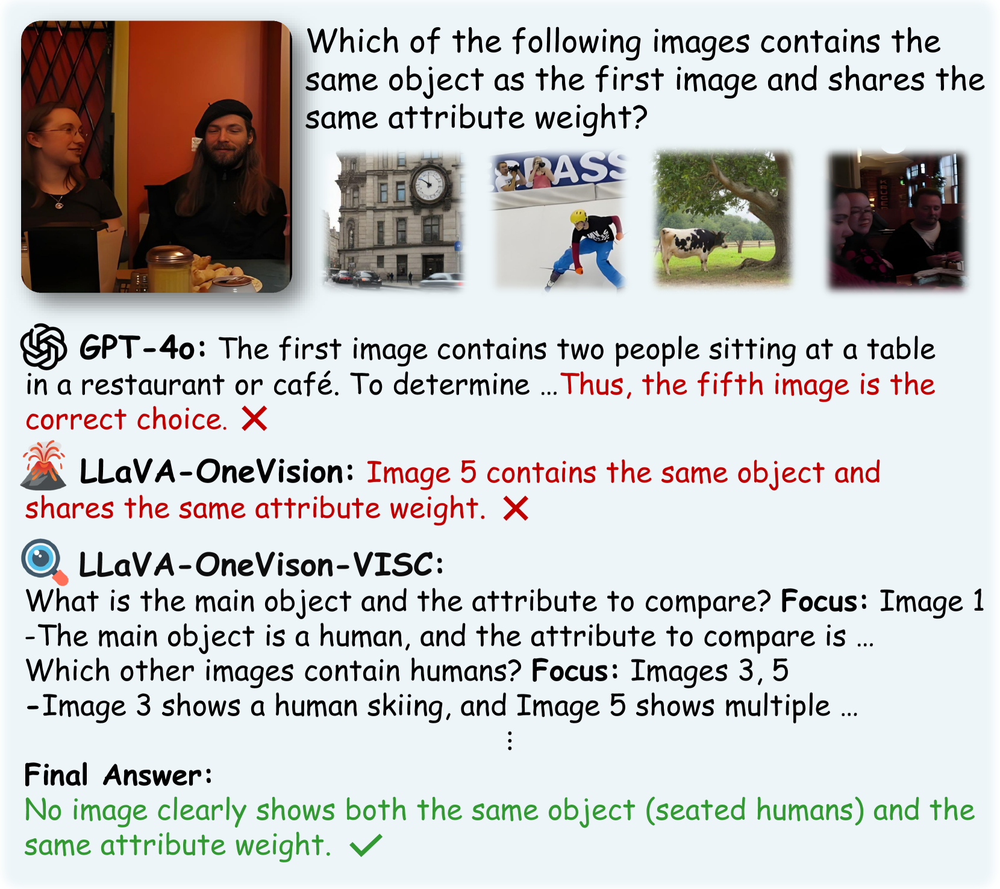
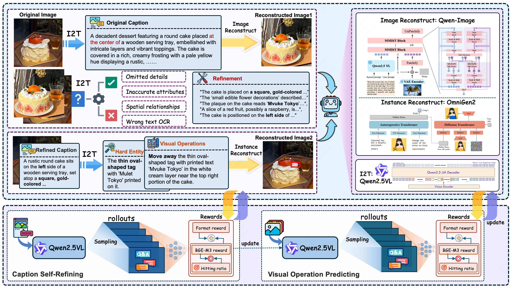
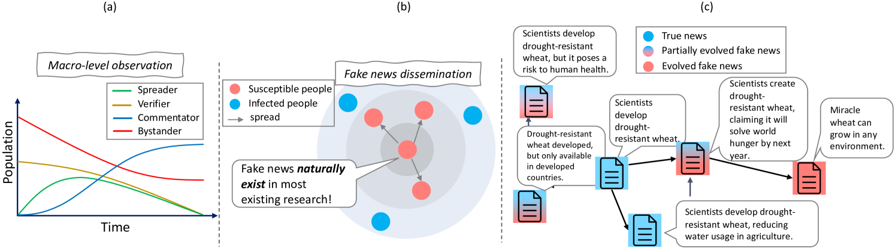

About Me
I am currently studying Artificial Intelligence at the Gaoling School of Artificial Intelligence, Renmin University of China.
I received my undergraduate education at Chu Kochen Honors College, Zhejiang University, with a major in Computer Science and Technology.
My research interests are Natural Language Processing, Large Language Models, and Multimodal Large Language Models.
Education
- Renmin University of China, Gaoling School of Artificial Intelligence, Major in Artificial Intelligence (Current).
- Zhejiang University, Chu Kochen Honors College, Major in Computer Science and Technology (Undergraduate).
Research Interests
自然语言处理（NLP） · 大语言模型（LLM） · 多模态大模型（MLLM）
Selected Publications
Selected first-author papers and representative work.



Internships
- 美团：大模型算法研究实习。
- 腾讯微信：大模型应用中心实习。
- 字节跳动 TikTok：前沿技术领域人才计划实习。
Contact
- GitHub: https://github.com/Icarus1216
- Google Scholar: https://scholar.google.com/citations?user=K-6vOfkAAAAJ&hl=en